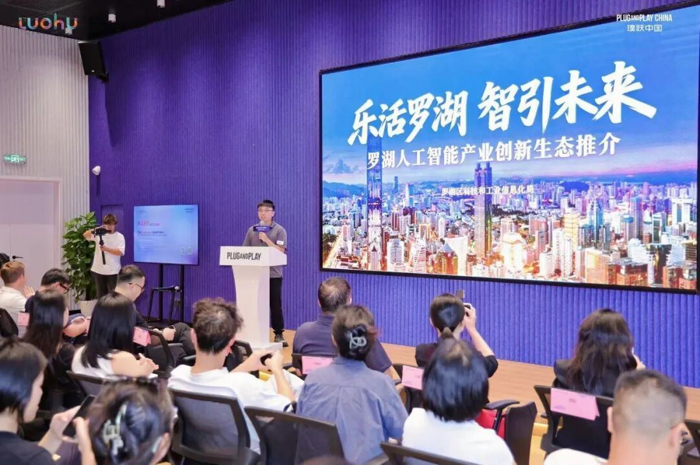
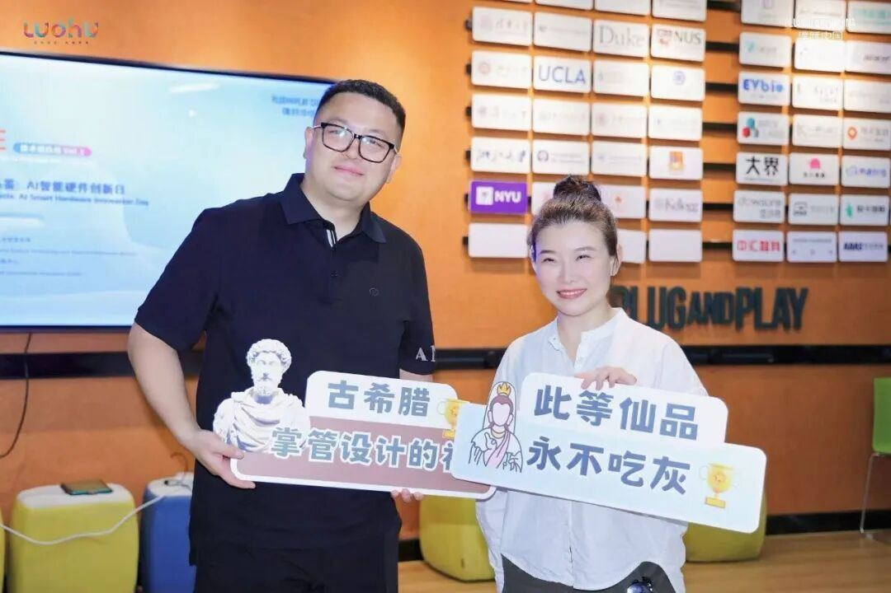
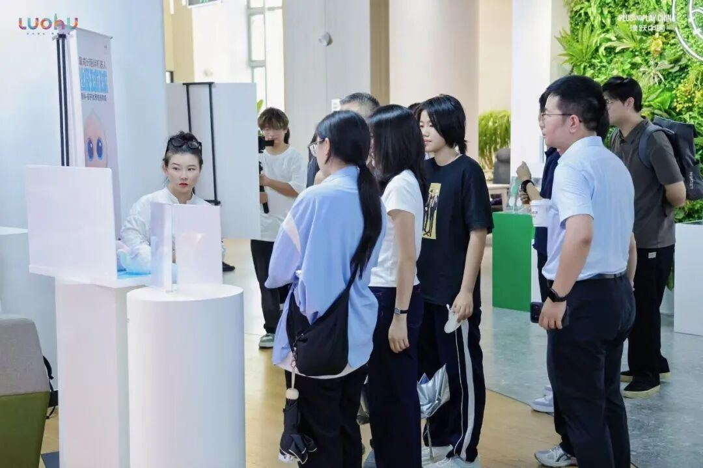
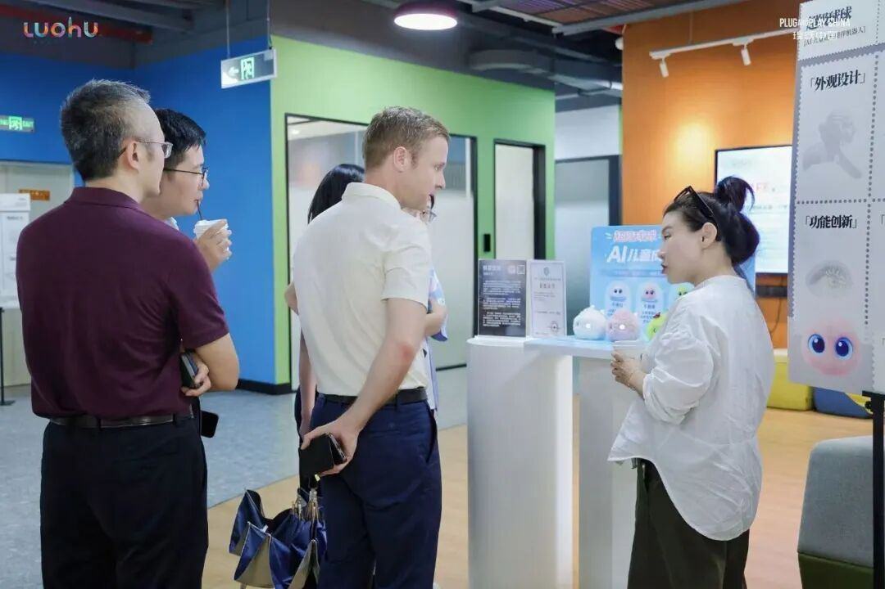
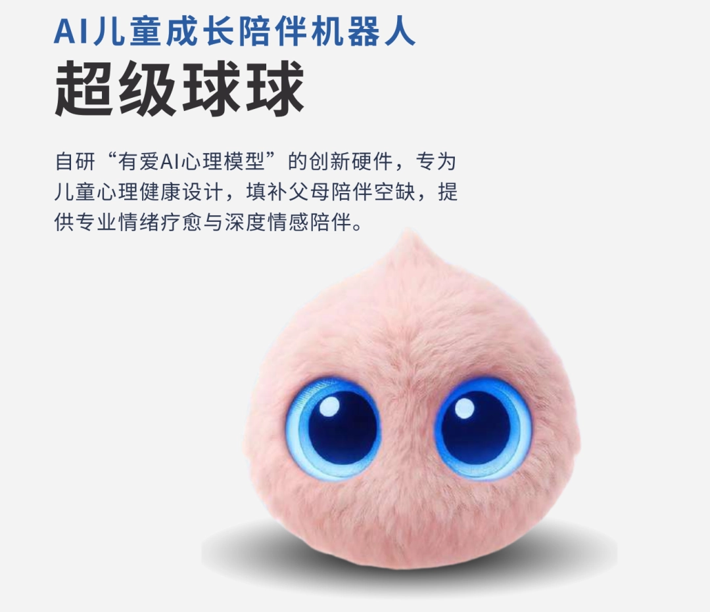
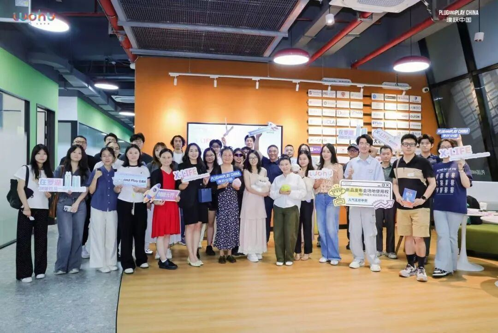

最佳设计、最佳体验双项⼤奖本次创新⽇特设⼤众品鉴投票环节，所有到场投资⼈、⾏业从业者、创业同⾏均可现场体验全部AI硬件展品后，现场投票选出全场最认可的创新产品。
经过多轮实物试⽤、功能对⽐，结合外观颜值、交互流畅度、场景实⽤性、创新差异化四⼤维度综合打分，超级球球在数⼗款参赛硬件产品中脱颖⽽出，⼀举拿下「最佳设计奖」+「最佳体验奖」两项核⼼荣誉，成为本场活动唯⼀斩获双奖项的⼉童AI硬件产品。
独特柔和的球形外观、适配孩童审美的治愈造型，让球球拿下最佳设计荣誉；⽽ AI 绘本融合、情绪安抚、低压⼒亲⼦陪伴的流畅交互体验，打动全场评委与观众，斩获最佳体验⼤奖。两项奖项均由现场来

宾真实体验后实名投票选出，是⾏业对我们产品设计与使⽤体验的双重认可。
现场产品品鉴，收获⼀⼿真实反馈活动现场专⻔设置了硬件品鉴专区，不少投资⼈与⾏业伙伴驻⾜体验超级球球。⼤家近距离体验AI绘本交互、情绪陪伴、亲⼦对话等核⼼功能，围绕产品定位、硬件迭代、市场落地提出了许多务实建议。
我们认真倾听每⼀条⽤⼾反馈，把来⾃⼀线市场的意⻅记录下来，为后续产品优化、功能迭代积累宝贵素材。沉浸式的线下体验，也让更多⾏业同仁看懂⼉童陪伴AI的市场需求与产品价值。

创投⾯对⾯，链接产业资源在创投开放⻨环节，罗湖⼈⼯智能产业创新⽣态正式推介，现场汇聚众多投资机构与硬件创业项⽬。
我们借助本次交流机会，深度对接创投圈资源，探讨⼉童AI硬件的赛道机会，在观点碰撞中梳理商业模式、打磨产品壁垒，为品牌后续融资与市场拓展打下基础。

整场活动氛围轻松务实，没有空洞的理论宣讲，⼤家坦诚交流⾏业痛点、分享落地经验。从硬件供应链、端侧⼤模型落地，到⺟婴亲⼦市场的渠道布局，我们和多位创业者深度交流，找到了不少潜在的合作契机。
活动尾声，⼤家⼀起合影留念，为这场⾼质量的产业交流画上圆满句号。

展望未来每⼀次线下品鉴，都是产品迭代的契机；每⼀次创投交流，都是品牌成⻓的阶梯！
未来，超级球球会持续打磨⾼敏感⼉童情绪陪伴AI产品，不断完善硬件与交互体验，紧抓端侧AI红利，把更温暖、更智能的亲⼦陪伴产品带给千万家庭我们也期待对接更多投资机构、渠道伙伴，携⼿深耕⼉童AI硬件赛道，共同把握消费智能硬件的⻩⾦机遇！
